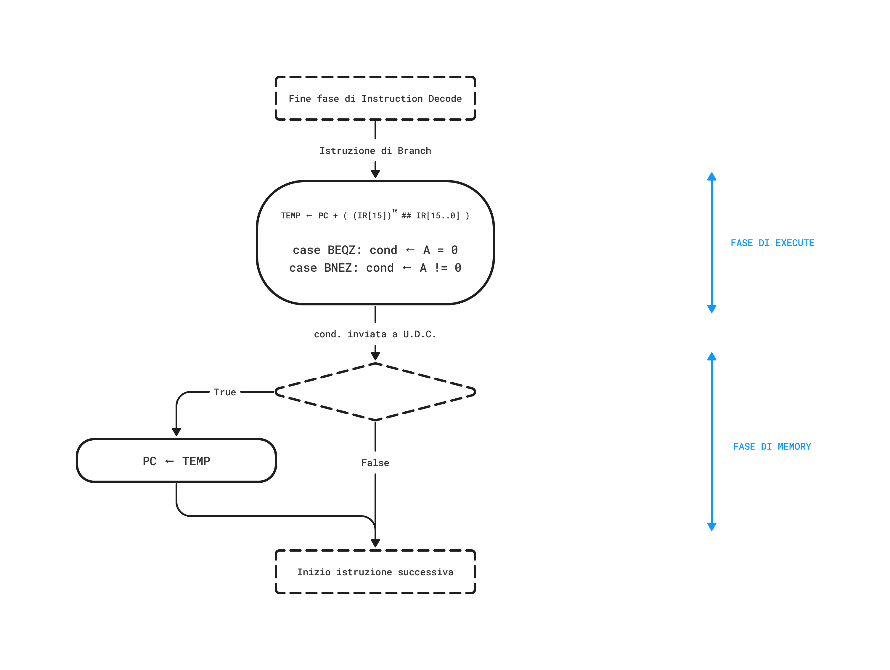

Definizione - Struttura di una CPU
Come è stato detto, la CPU è una rete logica sequenziale sincrona complessa con lo scopo principale di elaborare informazioni.
A questo scopo, essa è composta di due parti:
A questo scopo, essa è composta di due parti:
- il Datapath, un insieme di unità di calcolo (come l'ALU, i registri, ecc.) necessari per l'esecuzione delle istruzioni dell'ISA. Tali istruzioni, affinchè siano eseguite, sono suddivise in micro-operazioni più piccole;
- l'unità di controllo, ovvero una RSS che ad ogni ciclo di clock determina diversi segnali di controllo che condizioneranno quali micro-operazioni dovranno essere eseguite dal Datapath.
Definizione - Struttura dei registri e bus dati
Al fine di eseguire le diverse istruzioni, il DLX necessita di diversi registri per conservare le informazioni e di diversi bus per il trasporto di tali dati.
I bus (tutti dotati di parallelismo a \( 32 \mathrm{ \, bit }\)) necessari sono:
Oltre a questi, sono presenti diversi registri (sempre a \( 32 \mathrm{ \, bit }\)), ovvero: Da notare la presenza della memoria, che comunica con:
Da notare la presenza della memoria, che comunica con:
I bus (tutti dotati di parallelismo a \( 32 \mathrm{ \, bit }\)) necessari sono:
- i bus S1 e S2, che trasportano i dati dai registri (ad esempio verso l'ALU);
- il bus DEST, utile per trasportare i dati verso i registri.
Oltre a questi, sono presenti diversi registri (sempre a \( 32 \mathrm{ \, bit }\)), ovvero:
- il Register File, ovvero i trentadue registri general purpose accedibile direttamente dal programmatore;
- i registri A e B, ovvero i registri che permettono di "ritirare" i dati dal Register File;
- il registro C, ovvero un registro che permette di inserire i dati nel Register File;
- il Program Counter (anche detto PC);
- l'Instruction Address Register (anche detto IAR), in cui è depositato il valore del PC in caso di ricezione dell'interrupt;
- il Temporary Register (anche detto TEMP), utile per il deposito temporaneo di risultati intermedi;
- il Memory Address Register (anche detto MAR), contenente l'indirizzo destinazione di un ciclo di bus di lettura/scrittura;
- il Memory Data Register (anche detto MDR), contenente i dati di transito temporaneo di un ciclo di bus di lettura/scrittura;
- l'Instruction Register (anche detto IR), contenuto nell'unità di controllo e contenente l'istruzione attualmente in esecuzione.
- il registro MAR per poter leggere l'indirizzo desiderato dei cicli di lettura e scrittura;
- il registro MDR in input per poter fornire i dati durante i cicli di scrittura e in output per poter fornire i dati letti;
- il registro IR per poter fornire le istruzioni da eseguire durante la fase di fetch.
Definizione - ALU nel DLX
L'ALU è una rete combinatoria facente parte del Datapath del DLX. Essa permette di eseguire le istruzioni aritmetico-logiche utilizzando i dati forniti dai bus S1 e S2, ad esempio può eseguire:
- la somma (e differenza) tra S1 e S2;
- l'AND, l'OR, lo XOR bit-a-bit tra S1 e S2;
- lo shift logico e aritmetico
- lo Zero Flag, che segnala se il risultato è 0;
- il Sign Flag, che segnala se il risultato è negativo (considerando la rappresentazione in complemento a \( 2\));
- il Carry Flag, che segnala la presenza del riporto.
Definizione - Trasferimento dati sul Datapath
La comunicazione interna al DLX è basata sullo scambio di informazioni tra i bus S1, S2 e DEST e i diversi registri.
I registri sono tutti caratterizzati da un comportamento edge-triggered e sono collegati direttamente al clock interno del DLX. Si ha quindi che in input hanno un collegamento diretto (ovvero non è interposto un driver 3-state) ma è effettuato il campionamento solamente se l'unità di controllo asserisce il segnale Write Enable (tramite appositi segnali). Non è possibile ragionare nello stesso modo per l'output: si ha infatti che i registri incorporano al loro interno uscite con 3-state che "permetteranno il passaggio" del segnale solamente se asseriti i rispettivi segnali Output Enable (ovvero OE1 ed OE2).
Non è possibile ragionare nello stesso modo per l'output: si ha infatti che i registri incorporano al loro interno uscite con 3-state che "permetteranno il passaggio" del segnale solamente se asseriti i rispettivi segnali Output Enable (ovvero OE1 ed OE2).
I registri sono tutti caratterizzati da un comportamento edge-triggered e sono collegati direttamente al clock interno del DLX. Si ha quindi che in input hanno un collegamento diretto (ovvero non è interposto un driver 3-state) ma è effettuato il campionamento solamente se l'unità di controllo asserisce il segnale Write Enable (tramite appositi segnali).
Definizione - Massima frequenza di clock
Conoscendo il funzionamento del trasferimento dati sul Datapath, è possibile capire da cosa dipende la frequenza di clock. Si ha infatti che il periodo di clock \( T_{CK}\) deve essere almeno maggiore della somma tra:
- tempo (massimo) per la validità dei segnali di controllo \( T_C\), ovvero il ritardo massimo tra il fronte di salita del clock e l'istante in cui i segnali di controllo generati risultino validi;
- tempo (massimo) per la validità dei dati in output \( T_{OE}\), ovvero il ritardo massimo tra l'arrivo del segnale di Output Enable e l'istante in cui i dati sono presenti sul bus;
- tempo (massimo) per la validità del risultato ottenuto dall'ALU \( T_{ALU}\);
- tempo (minimo) di set-up dei registri \( T_{SU}\), ovvero il tempo minimo affinché il dato possa essere campionato dai registri.
Definizione - Struttura unità di controllo
Dopo aver definito il set di istruzioni e aver progettato il Datapath, è necessario progettare l'unità di controllo. Tale rete è una rete sequenziale sincrona il cui funzionamento può essere specificato tramite un diagramma degli stati: dato che consideriamo come segnale sincrono il clock, si avrà che ad ogni ciclo di clock corrisponde uno stato. Come ogni rete sequenziale, sarà necessario tenere conto dello stato presente e degli ingressi per generare lo stato futuro. In base allo stato, saranno poi generati appositi segnali di controllo diretti al Datapath.  Da notare che la struttura di questa rete non è diversa dalla struttura di una generica macchina a stati finiti (Finite State Machine).
Da notare che la struttura di questa rete non è diversa dalla struttura di una generica macchina a stati finiti (Finite State Machine).
Definizione - Esecuzione di un'istruzione
Considerando una generica istruzione, è possibile identificare cinque diverse fasi che descrivono il suo completamento (anche se non sempre sono tutte necessarie). Si ha infatti:
Il diagramma degli stati (in cui ad ogni blocco corrisponde un ciclo di clock) di questa fase è quindi il seguente È da notare che il comportamento è differente in base alla ricezione o meno di un interrupt e se la sua ricezione sia abilitata o meno (ovvero il segnale Interrupt Enable IEN è attivo).
È da notare che il comportamento è differente in base alla ricezione o meno di un interrupt e se la sua ricezione sia abilitata o meno (ovvero il segnale Interrupt Enable IEN è attivo).
Nel caso si stia vivendo una situazione "regolare" si ha che è necessario effettuare un ciclo di lettura alla memoria all'indirizzo del Program Counter PC: sarà quindi necessario assegnare al Memory Address Register (MAR) il valore di PC e leggere tale indirizzo dalla memoria (che fornirà il dato solo quando il segnale READY sarà asserito dal Memory Controller, come in un tipico ciclo di lettura).
Nel caso invece si debba gestire un interrupt, la situazione è differente. È necessario infatti salvare il valore di PC nel registro Interrupt Address Register IAR, assegnare il valore 0000 0000h al PC (in quanto posizioniamo il codice di gestione degli handler a tale indirizzo) e asserire IEN = 0 (in quanto non prevediamo il nesting). Una volta fatto ciò, è possibile ricominciare la fase di Instruction Fetch.Fase di Istruction Decode La fase di Instruction Decode è eseguita immediatamente dopo alla fase di Instruction Fetch. Tale fase risulta essere particolarmente semplice e immediata grazie a diverse scelte fatte sulla struttura delle istruzioni.
Come abbiamo già detto, infatti, si ha che ogni istruzione è a lunghezza fissa (ovvero occupa precisamente \( 4 \mathrm{ \, Byte }\)) e presenta le informazioni in posizioni predefinite. Ciò, ci permette di ridurre questa fase a Come è evidente dal diagramma, si ha che è possibile eseguire questa fase in un singolo ciclo di clock, in quanto le operazione possono essere eseguite in parallelo. In particolare si ha che:
Come è evidente dal diagramma, si ha che è possibile eseguire questa fase in un singolo ciclo di clock, in quanto le operazione possono essere eseguite in parallelo. In particolare si ha che:
- la fase di Instruction Fetch (sempre eseguita) in cui viene prelevata l'istruzione da eseguire dalla memoria e "deposita" nell'Instruction Register;
- la fase di Instruction Decode (sempre eseguita) in cui l'istruzione presente nell'Instruction Register viene decodificata;
- la fase di Execute in cui vi è l'elaborazione aritmetico-logica che utilizza l'ALU;
- la fase di Memory in cui è eseguito l'accesso in memoria;
- la fase di Write-Back in cui si riportano i risultati ottenuti nel Register File.
Il diagramma degli stati (in cui ad ogni blocco corrisponde un ciclo di clock) di questa fase è quindi il seguente
Nel caso si stia vivendo una situazione "regolare" si ha che è necessario effettuare un ciclo di lettura alla memoria all'indirizzo del Program Counter PC: sarà quindi necessario assegnare al Memory Address Register (MAR) il valore di PC e leggere tale indirizzo dalla memoria (che fornirà il dato solo quando il segnale READY sarà asserito dal Memory Controller, come in un tipico ciclo di lettura).
Nel caso invece si debba gestire un interrupt, la situazione è differente. È necessario infatti salvare il valore di PC nel registro Interrupt Address Register IAR, assegnare il valore 0000 0000h al PC (in quanto posizioniamo il codice di gestione degli handler a tale indirizzo) e asserire IEN = 0 (in quanto non prevediamo il nesting). Una volta fatto ciò, è possibile ricominciare la fase di Instruction Fetch.
Osservazioni personali - Un approccio più veloce
Considerando questa soluzione più "classica", si ha che la lettura dell'istruzione è fatta attraverso un tipico ciclo di lettura che prevede il caricamento sul registro MAR di PC per effettuare solo successivamente la richiesta di accesso alla memoria.
Ciò risulta però non essere la soluzione più efficiente in quanto conosciamo a priori il registro sorgente di quell'assegnamento ed è quindi possibile modificare il Datapath per poter indirizzare la memoria direttamente dal PC. Si avrebbe quindi un diagramma degli stati così modificato in cui per ogni istruzione si risparmia un ciclo di clock.
in cui per ogni istruzione si risparmia un ciclo di clock.
Ciò risulta però non essere la soluzione più efficiente in quanto conosciamo a priori il registro sorgente di quell'assegnamento ed è quindi possibile modificare il Datapath per poter indirizzare la memoria direttamente dal PC. Si avrebbe quindi un diagramma degli stati così modificato
Come abbiamo già detto, infatti, si ha che ogni istruzione è a lunghezza fissa (ovvero occupa precisamente \( 4 \mathrm{ \, Byte }\)) e presenta le informazioni in posizioni predefinite. Ciò, ci permette di ridurre questa fase a
- il PC è incrementato di +4;
- ignorando quale istruzione è da eseguire, sono "estratti" i valori dei due registri indicati dall'istruzione (nel caso di istruzioni di formato R) e posti nei registri A e B. Si fa ciò per risparmiare successivamente un ciclo di clock, in quanto il caso peggiore che può capitare è il fatto che la sequenza di bit considerata non indicasse dei registri ma altro (in questo caso tali valori non sono utilizzati);
- grazie ad un decoder, è possibile comprendere con una semplice logica combinatoria quale operazione è necessario fare.
Definizione - Logica di estensione del segno nel Datapath
Considerando le istruzioni di formato I e J, si ha che all'interno dell'istruzione è codificato anche un immediato. Tale valore, al fine di essere poi "trasportabile" dai bus dell'ALU, deve essere esteso a \( 32 \mathrm{ \, bit }\). Per farlo (nel caso di immediati a \( 16 \mathrm{ \, bit }\) ma in maniera non dissimile per gli immediati a \( 26 \mathrm{ \, bit }\)) si utilizza una rete logica simile a questa (ipotizzando che l'immediato sia posizionato nei bit IR[15..0])  In quanto gli immediati sono sempre interpretati come valori signed, si ha che è possibile effettuare l'estensione del segno copiando nei bit rimanenti il bit più significativo dell'immediato.
In quanto gli immediati sono sempre interpretati come valori signed, si ha che è possibile effettuare l'estensione del segno copiando nei bit rimanenti il bit più significativo dell'immediato.
Definizione - Trasferimenti di Half-Word e Byte
Considerando le istruzioni di Data Transfer (ovvero le Load e le Store) si ha che deve essere possibile il trasferimento di stringhe con lunghezza minore a \( 32 \mathrm{ \, bit }\) (ovvero la dimensione dei registri). Come sappiamo, tale meccanismo è realizzato con la logica dei Bus Enable che attivano le rispettive memorie fisiche legate ad un certo indirizzo. Sappiamo inoltre che il registro preposto al trasferimento di dati durante i cicli di bus è il registro MDR: è necessario quindi gestire i diversi trasferimenti di dato.
Considerando il caso delle Load (ovvero quando il trasferimento va dalla memoria al registro MDR) sarà necessario utilizzare una serie di multiplexer per gestire come sarà esteso il segno e da quali memorie fisiche leggere il dato. Ad esempio, ipotizzando di voler leggere un singolo Byte, si vorrà inserire nell'MDR la corrispondente memoria parallela che si è attivata (in base all'indirizzo a cui si è effettuato il ciclo di lettura). Sempre considerando il caso di lettura di un singolo Byte, è necessario discriminare per i restanti tre Byte più significativi come effettuare l'estensione del segno: nel caso si volesse eseguire un'istruzione LB (ovvero il trasferimento di un Byte signed), sarà necessario estendere il bit più significativo del Byte. Nel caso invece si volesse eseguire una LBU (ovvero il trasferimento di un Byte unsigned) sarà sufficiente concatenare diversi bit 0.
Considerando invece il caso delle Store (ovvero quando il trasferimento va dal registro MDR alla memoria) sarà necessario utilizzare una serie di demultiplexer per gestire dove il dato dovrà essere posizionato nella memoria, al fine di sovrascrivere solo i Byte espressi tramite il comando. Ad esempio, considerando l'esecuzione di una SH (ovvero il trasferimento di \( 2 \mathrm{ \, Byte }\)) saranno trasferiti i \( 2 \mathrm{ \, Byte }\) meno significativi dell'MDR verso le giuste memorie fisiche che si vogliono sovrascrivere (lasciando invariati i Byte non interessati a quell'indirizzo di memoria).
Considerando il caso delle Load (ovvero quando il trasferimento va dalla memoria al registro MDR) sarà necessario utilizzare una serie di multiplexer per gestire come sarà esteso il segno e da quali memorie fisiche leggere il dato. Ad esempio, ipotizzando di voler leggere un singolo Byte, si vorrà inserire nell'MDR la corrispondente memoria parallela che si è attivata (in base all'indirizzo a cui si è effettuato il ciclo di lettura). Sempre considerando il caso di lettura di un singolo Byte, è necessario discriminare per i restanti tre Byte più significativi come effettuare l'estensione del segno: nel caso si volesse eseguire un'istruzione LB (ovvero il trasferimento di un Byte signed), sarà necessario estendere il bit più significativo del Byte. Nel caso invece si volesse eseguire una LBU (ovvero il trasferimento di un Byte unsigned) sarà sufficiente concatenare diversi bit 0.
Considerando invece il caso delle Store (ovvero quando il trasferimento va dal registro MDR alla memoria) sarà necessario utilizzare una serie di demultiplexer per gestire dove il dato dovrà essere posizionato nella memoria, al fine di sovrascrivere solo i Byte espressi tramite il comando. Ad esempio, considerando l'esecuzione di una SH (ovvero il trasferimento di \( 2 \mathrm{ \, Byte }\)) saranno trasferiti i \( 2 \mathrm{ \, Byte }\) meno significativi dell'MDR verso le giuste memorie fisiche che si vogliono sovrascrivere (lasciando invariati i Byte non interessati a quell'indirizzo di memoria).
Definizione - Controllo per le istruzioni di Data Transfer
Le istruzioni di Data Transfer (ovvero quelle che coinvolgono cicli di bus) hanno in generale la stessa struttura: sono infatti tutte istruzioni di formato I, ovvero attraverso l'istruzione saranno forniti due registri (caricati su A e B) e un immediato (esteso a \( 32 \mathrm{ \, bit }\)). Istruzioni di Load Considerando le istruzioni di Load, il diagramma degli stati associato sarà il seguente:  In questo tipo di istruzioni si ha che saranno quindi eseguiti i seguenti passaggi:
In questo tipo di istruzioni si ha che saranno quindi eseguiti i seguenti passaggi:  In questo tipo di istruzioni si ha che saranno quindi eseguiti i seguenti passaggi:
In questo tipo di istruzioni si ha che saranno quindi eseguiti i seguenti passaggi:
- inizialmente è caricato nel registro MAR il risultato della somma tra il registro e l'immediato esteso con segno;
- una volta effettuato ciò, si effettua l'accesso in memoria;
- una volta letto tale valore (presente nell'MDR), in base all'istruzione che si deve eseguire, sarà inserito nel registro C il valore dell'MDR (esteso in maniera appropriata se necessario);
- infine, durante la fase di Write Back, sarà trasferito nel registro destinazione il valore presente in C.
- inizialmente è caricato nel registro MAR il risultato della somma tra il registro e l'immediato esteso con segno;
- viene quindi inserito il valore di B nell'MDR;
- tramite un'apposita rete logica, sono attivati i corretti Bus Enable e viene effettuato l'accesso in memoria (in scrittura).
Definizione - Controllo per le istruzioni ALU
Le istruzioni ALU (ovvero quelle che coinvolgono operazioni aritmetiche) possono essere di formato I e di formato R. Il diagramma degli stati ad esse associato sarà quindi il seguente:  Dato ciò, si ha che si adotta la seguente strategia per uniformare l'esecuzione:
Dato ciò, si ha che si adotta la seguente strategia per uniformare l'esecuzione:
- inseriamo il valore del secondo operando nel registro TEMP: nel caso stessimo eseguendo una istruzione R utilizzeremo direttamente il valore, altrimenti il suo segno sarebbe esteso in maniera appropriata;
- calcoliamo il risultato utilizzando l'ALU a cui sono inviati appositi segnali di controllo;
- il risultato ottenuto (che risiede in C), sarà inserito nel registro destinazione RD indicato nell'istruzione.
Osservazioni personali - Un'alternativa
Per rendere queste istruzioni più efficienti di un ciclo di clock, sarebbe possibile eliminare il registro TEMP e duplicare i percorsi.
Definizione - Controllo per le istruzioni di Set
Le istruzioni di Set (ovvero quelle che coinvolgono operazioni logiche) possono essere di formato I e di formato R. Il diagramma degli stati ad esse associato sarà quindi il seguente:
Dato ciò, si ha che si adotta la seguente strategia per uniformare l'esecuzione:
- inseriamo il valore del secondo operando nel registro TEMP: nel caso stessimo eseguendo una istruzione R utilizzeremo direttamente il valore, altrimenti il suo segno sarebbe esteso in maniera appropriata;
- calcoliamo il risultato utilizzando l'ALU a cui sono inviati appositi segnali di controllo;
- il risultato (inviato all'unità di controllo) sarà utilizzato per sovrascrivere il valore di C e sarà successivamente inserito nel registro destinazione RD indicato nell'istruzione.
Definizione - Controllo per le istruzioni di Jump
Le istruzioni di Jump (ovvero quelle di salto incondizionato) possono essere di formato J e di formato R. Esistono inoltre del tipo "Jump" e del tipo "Jump And Link" (in cui il valore del PC è salvato nel registro R31). Il diagramma degli stati associato alle istruzioni di "Jump" sarà quindi il seguente:  mentre quello associato alle istruzioni di "Jump And Link" è il seguente:
mentre quello associato alle istruzioni di "Jump And Link" è il seguente:  Si ha quindi che l'esecuzione di entrambi i tipi di istruzione risulta essere piuttosto simile, in generale si ha infatti che:
Si ha quindi che l'esecuzione di entrambi i tipi di istruzione risulta essere piuttosto simile, in generale si ha infatti che:
- nel caso fosse una istruzione di "Jump And Link", è necessario salvare il valore attuale del PC;
- in base al formato dell'istruzione, è necessario calcolare il valore del PC di destinazione. Si avrà infatti che il valore destinazione sarà uguale al valore del registro indicato oppure come somma tra l'attuale valore del PC e l'immediato a \( 26 \mathrm{ \, bit }\);
- utilizzando quindi il risultato calcolato e presente nel registro TEMP, si sovrascrive il valore di PC e, nel caso di istruzioni "Jump And Link", si sovrascrive il valore di R31 con quello del precedente PC presente nel registro C.
Definizione - Controllo per le istruzioni di Branch
Le istruzioni di Branch (ovvero quelle di salto condizionato) esistono in due tipi differenti per come è valutato il valore del registro fornito. Si ha infatti che il diagramma degli stati associato a questo tipo di istruzioni è così formato: Si ha quindi che:

- inizialmente, ancora ignorando il valore del registro fornito, è calcolato e salvato in TEMP, il valore destinazione del PC;
- in base all'istruzione, è valutato il valore del registro (il controllo è effettuato su tutto il registro e non solo sul valore dell'ultimo bit);
- considerando quindi il risultato della valutazione, nel caso il Branch fosse "taken", è trasferito il valore di TEMP nel PC.